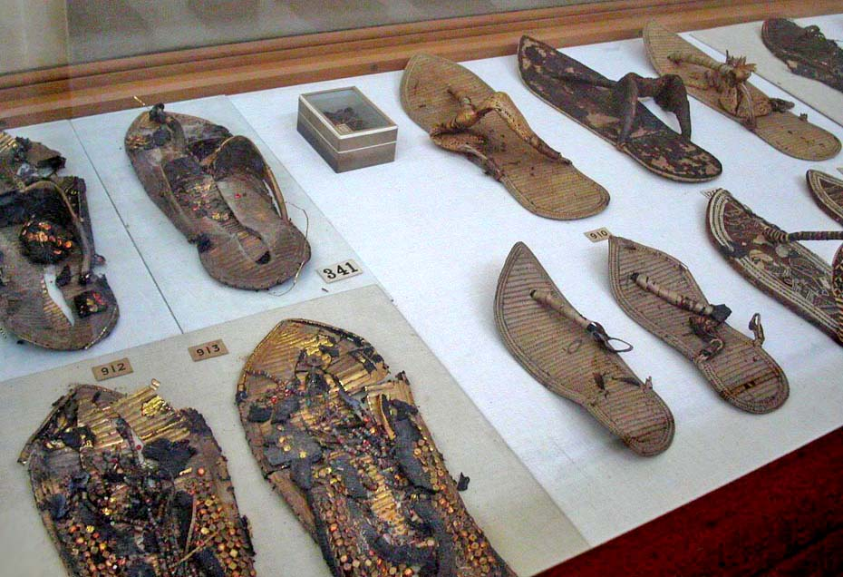
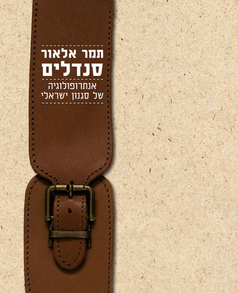
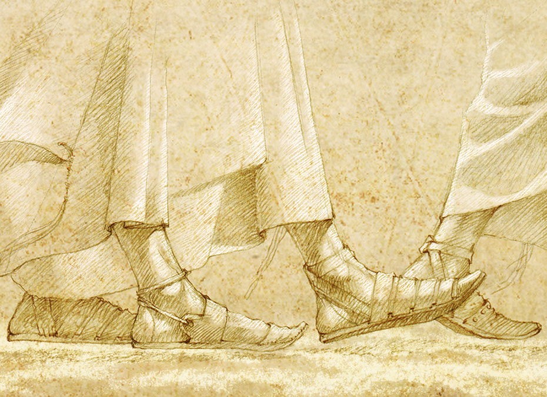

Скажи мне о твоих сандалиях, и скажу тебе, кто ты. I
Моше рабейну надевал их в пустыне, древние цари украшали себя более изысканными моделями, а кибуцники (кибуцы – нечто вроде израильских колхозов) сделали их ультимативным символом Сабры (название кактуса - так называют в Израиле уроженцев страны). Но в последние годы сандалии утратили свое прежнее величие, и начали собирать пыль в ящике для старой обуви. Почему это произошло, и есть ли шанс вернуться к этим славным подошвам?
перевод с иврита в сокращении: Эфраим Калиш (nrg.co.il)


Социолог Тамар Эль-Ор скрупулёзно исследовала историю сандалий в Израиле. Эта статья написана на основе интервью с ней.
Важнейшим аксессуаром, определившим в эпоху становления израильской государственности облик «типичного» гражданина новой страны, наряду с шортами, панамкой (кова тембель), рубашкой-апаш с распахнутым воротом, стали так называемые «библейские сандалии» (сандалим танахиим).
В своей книге "сандалии", недавно опубликованной на иврите издательством «Ам Овед», Эль-Ор рассказывает историю сандалий от Древнего Египта до Израиля наших дней. Особое место в современной истории моды Израиля сыграла обувная компания «Нимрод».

обложка книги "САНДАЛИИ" Тамар Эль-ОрСлово «сандалии» пришло в иврит из греческого. Библейский стих (Исх.3:5) употребляет слово НААЛЬ (от глагола - завязывать, обувать, запирать). Только в более поздней еврейской литературе используется слово сандалии. В библейские времена, по мнению Эль-Ор, носили сандалии с ремешком вдоль стопы (от редактора ТОРААРТ: есть и другие мнения на этот счет. Так Гади Полак, ортодоксальный иудей и при том замечательный художник-иллюстратор, предложил свою реконструкцию ДРЕВНИХ ЕВРЕЙСКИХ сандалий, в которых отцы наши ходили по пустыне. Замечательно интересное пояснение на этот счет + иллюстрации см. здесь).


Откуда же тогда появилось понятие "сандалей танахиим" (библейские сандалии – так их называют в Израиле сегодня), имея в виду сандалии с двумя широкими поперечными ремнями? Эту модель создали сапожники, репатриировавшиеся из Чехии и Германии и осевшие в основном в кибуцах. Они сделали две широкие полосы, имеющие лучшее сцепление с ногой, так чтобы было возможно в прохладное время одевать их с носками. К тому же такая конструкция более прочна и надежна. Прототипом послужила европейская модель под названием «сандалии Иисуса» (Jesuslatschen). В подобных сандалиях ходят монахи, одетые во власяницу, при отсутствии всяких разноцветных украшений, что символизирует скромность и смирение.
В Эрец Исраэль решили дать им, более подходящее для момента и места, имя – «сандалей танахиим» (библейские сандалии). Но это, по признанию Эль-Ор лишь ее собственные домыслы.
"В пятидесятых и шестидесятых археология была очень популярна, и тысячи простых людей из поселений посещали мероприятия и выставки израильской археологии, чтобы увидеть связь с прошлым. Зная, что здесь в древние времена жили евреи, нечто произведенное здесь и сочетающееся по колориту с местным пейзажем, волновало общественность. Когда израильский потребитель видит что-то произведенное здесь, что соответствует колориту места, что не выглядит буржуазно (среди переселенцев в Эрец Исраэль было немало социалистов) и не какой ни будь старомодный костюм, и не закрытая обувь, заимствованная из Европы – это давало ощущение новизны, которое гармонировало с ощущением обновления в Сионизме

История успеха «Нимрода» в стране дала ему крылья, чтобы достичь заокеанских стран. Автобусы наполненные туристами прибывали в единственный магазин компании, расположенный на улице Дизенгоф в Тель-Авиве, чтобы купить сандалии, которые носят израильтяне.
Эль-Ор считает, что успех компании зависел в первую очередь от маркетингового гения лидера компании. Йосеф Бен-Арци, один из основателей компании «Нимрод», публикуя рекламу в New York Times, идентифицировал эти сандалии один к одному с теми, что носили наши предки здесь на этой земле. И в каталогах продукции «Нимрода» 60-х годов сандалии значились как «аутентичная израильская обувь, почти не изменившаяся со времен библейских патриархов. Даже сегодня Дева Израилева носит те же сандалии, что и в древние времена».
Ему удалось создать сандалии очень высокого качества, он смог найти простые линии силуэта и сделать это уникальным. Его идея состояла в том, чтобы производить только сандалии и продавать их в течение восьми месяцев в год, небольшого количества выверенных моделей."
Они продавали 600-700 пар в день! Один магазин! Подумайте, что это такое! Эль-Ор рассказывает, о ее американских родственниках, которые имели в списке обязательных покупок для Израиля одну из вещей - «сандалии Нимрода». Эти сандалии проникли в книги по туризму в Америке и Европе. Американские туристы не желали вернуться домой без этих босоножек.

Бен-Арци работал с клиентами по всему миру и по почте. Это было почти как сегодня интернет-коммерция. Этот человек своими коммерческими идеями опередил свое время".
Во 2-й части статьи: почему сандалии стали важным символом Сионистского движения. Продолжение статьи читайте здесь.